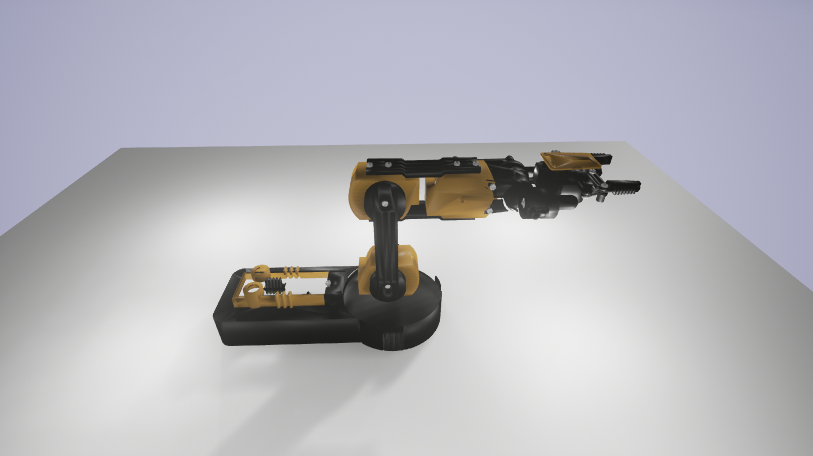
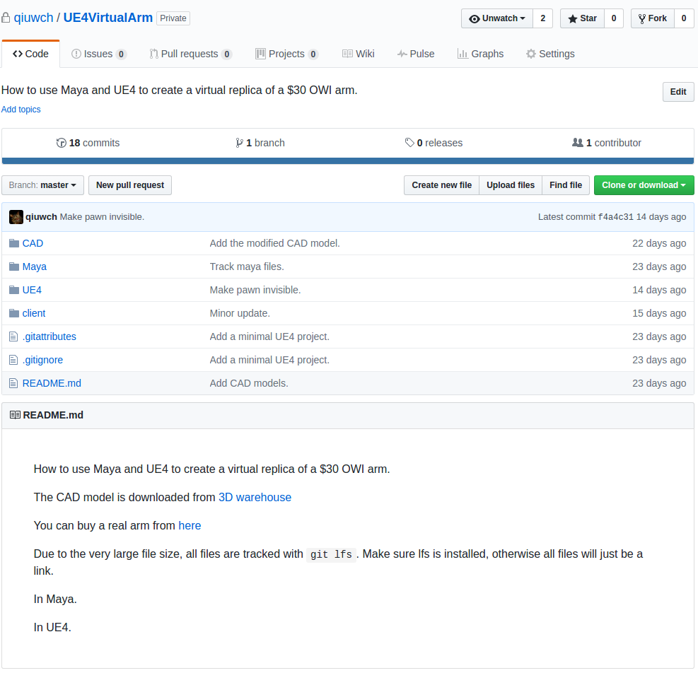

The virtual robot arm¶
The virtual arm is stored in a different repository qiuwch/UE4VirtualArm. This is because the 3D CAD models are very large. This repository is still in private mode, because we are still finializing the design and will release it together with a publication. If you are interested in this project, please send an email to qiuwch@gmail.com to request access.
A compiled virtual arm binary can be downloaded.
The screenshot of the virtual arm

The arm is placed in an empty environment. If you want to place the arm to a different virtual environment. The access to the source project is required.
This virutal arm can be controlled with the unrealcv project.
